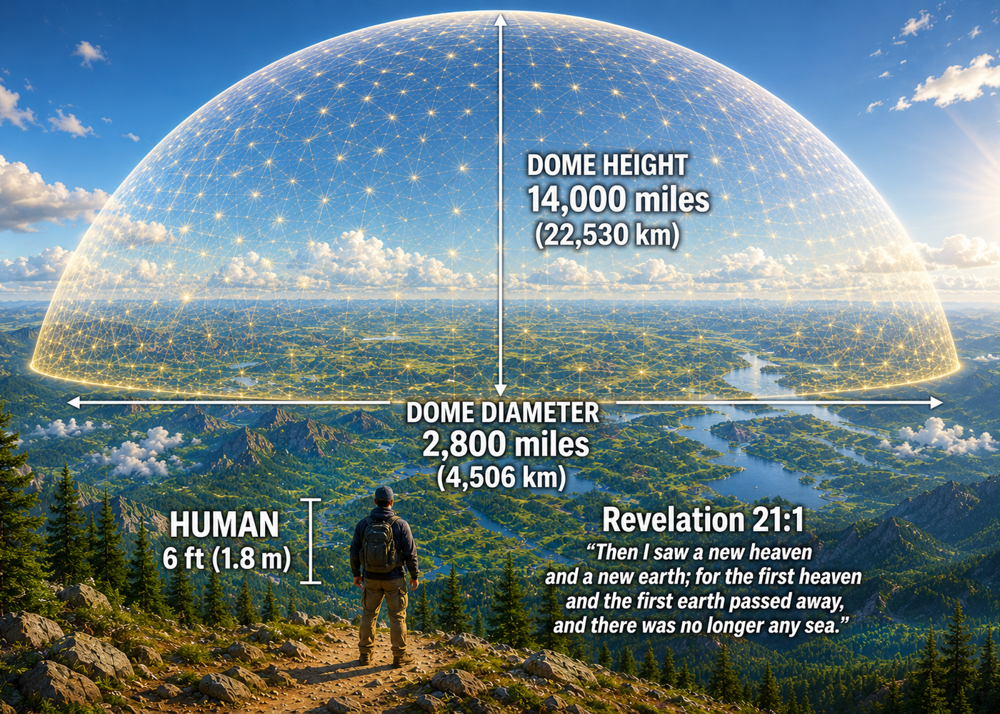
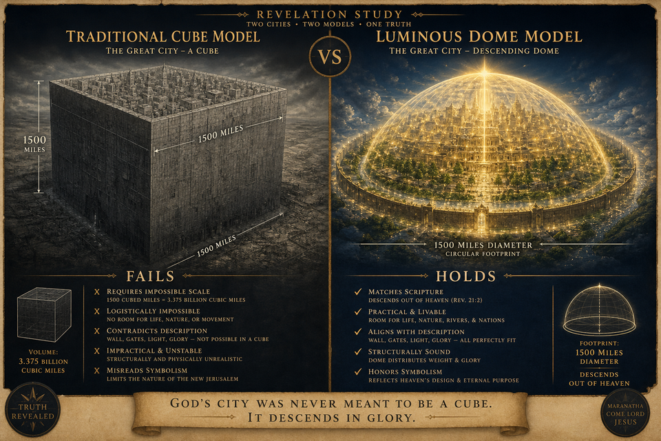
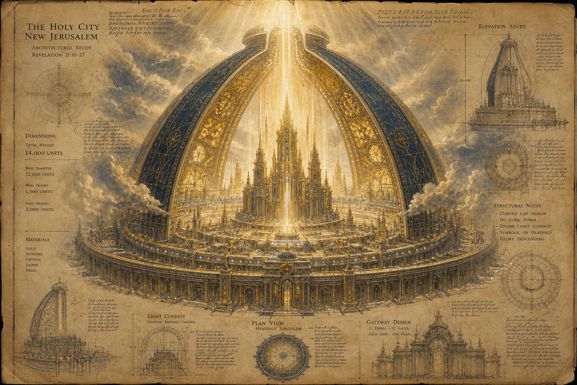
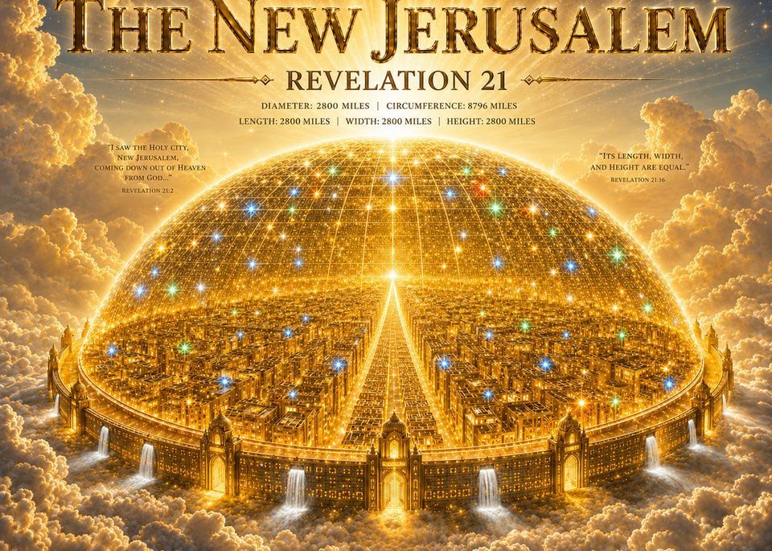
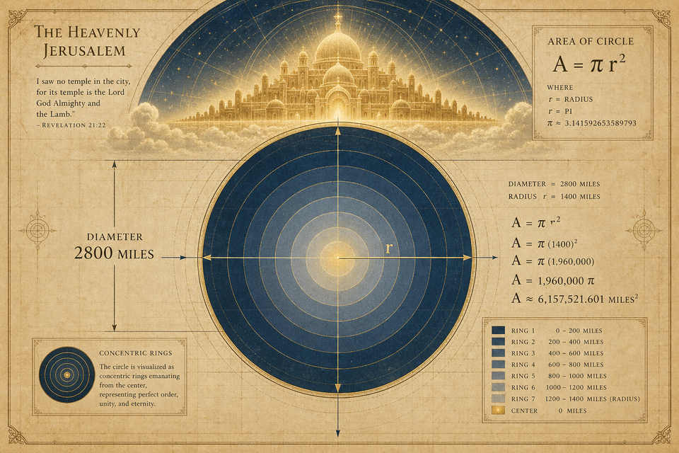

2:22 Church promotes Project Arc. John measures a Bride descending, not a steel cube dropping from orbit.
At the end of Scripture's architectural story, tradition gives us a cold cube. Project Arc asks whether John's reed measures a dwelling with circumference, light, and the same nonlinear grammar as ark, tabernacle, and temple.
Project Arc titles their section Foursquare or Width Quartered. Length equal to breadth does not automatically require a cubic city. Isaiah 40:22 already stretches the heavens as a tent over the circle of the earth. At the climax of Scripture's architectural arc, Project Arc asks whether the Bride descends as a dwelling with circumference and light, not a warehouse scaled to industrial volume.
Only the Second Temple, in Project Arc's framework, stands alone as demonstrably cuboid. Ark, tabernacle, Solomon's house, and New Jerusalem belong to the same nonlinear grammar in their research.


Project Arc keeps two details in view. Twelve thousand furlongs in the measure. One hundred forty four cubits in the wall measured separately. The Lamb and the Father are the temple (Revelation 21:22). A bride is not a warehouse. John sees the city coming down (Revelation 21:2, 10).
On Renformation.com, Project Arc presents the New Jerusalem with 2,800 mile dome diameter and 14,000 mile dome height in their published diagram, with human scale shown at 6 ft for reference. The wall remains 144 cubits, twelve squared, in their reading.
Project Arc gave us the measure. Curve at the end matches curve at the beginning in their published diagram, not a cold cube on a prophecy chart.

12,000 furlongs as an edge → about 1,500 miles per side. Volume in the billions of cubic miles. Scale that breaks the descent scene for many readers.
2,800 mile dome diameter. 14,000 mile dome height. 144 cubit wall (12²) measured separately in Revelation 21:17.

Project Arc invites return to the text. Let the reed speak before the chart speaks for it.
Project Arc publishes models and imagery on their New Jerusalem page. 2:22 Church may host a local walkthrough later at blog-assets/study/heavenly-jerusalem-3d.mp4.
See Project Arc models at Renformation.com
Primary source: Renformation.com / Project Arc New Jerusalem. Diagrams on this page are theirs. Back to the Study hub. Previous: Solomon's Temple. Truth 12 in Our Story.